Lecture05
The Open Science movement in Psychology
31 October, 2022
Key topics today
The week ahead (week 5)
- Personal Tutor Meeting about essay writing - bring your questions
- Departmental Seminar (week 5) - Body (mis)perception
- Design & Analysis Quiz due this week (week 5)
- Open Science
- Labs - Critical Proposal and Power Calculations
Personal Tutor Meeting Week 4
This week (week 5) your PT session is all about essay writing
Tip
Some of you have expressed doubts about this. Please see this as an opportunity to get answers to any questions.
Make sure to use your feedback!
Departmental Seminar (week 5)
Dr Valentina Cazzato Liverpool JMU
Behavioural and Neural Signatures of Visual Body (mis)perception
Thursday, 3 November 2022 at 16:00 – 17:00 - RHB 300a
Visual representation of the body is a key aspect of self-body image. Its importance in our social life is proved by the unreasonable time and effort we put on taking care of our physical appearance, including use of plastic surgery, as well as by the severe mental disorders linked to its disturbance, such as Eating Disorders.
Any Questions?
So…
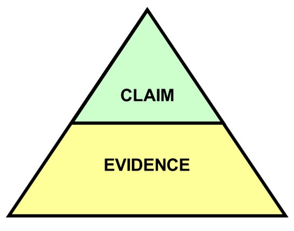But what does that mean?
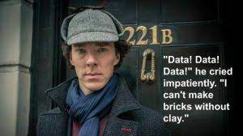Nosek et al. (2015)
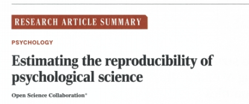The replication crisis
Nosek et al (2015) conducted 100 replications of psychology studies published in three psychology journals
While 97 of previous studies reported significant results, only 36 were significant in the replication attempt. And effects were smaller than originally reported…
Violin plots
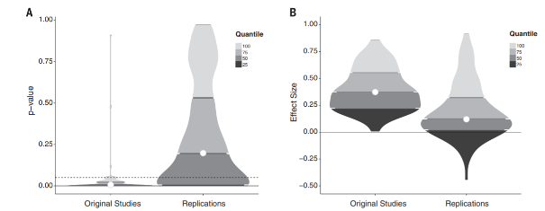Raincloud plots
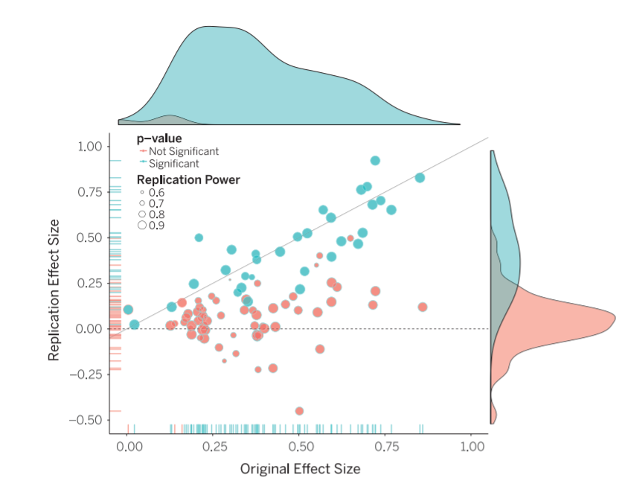Why aren’t we replicating?
Some point the finger at scientific fraud (i.e. bad scientists making up their data)
However, others point to more systematic problems
Low statistical power
Questionable research practices (QRPs)
Publication bias
Statistical power
Since 1960s, sample sizes in standard psychology studies have remained too small – giving them low power
Low power is normally a problem because it means that you don’t find significant effects
An underappreciated downside of low power is that if you do find effect, it is probably spuriously exaggerated
This will mean that when you try to replicate it, it will be smaller (not significant)
Next week
The Replication Crisis and our ongoing response - Open Science
The practice of Psychology we encourage in you!
Power plot
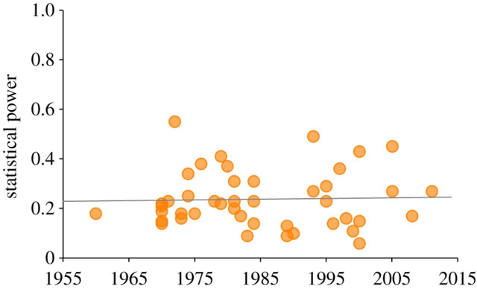Smaldino, P. E., & McElreath, R. (2016). The natural selection of bad science. Royal Society Open Science, 3(9), 160384. https://doi.org/10.1098/rsos.160384
Questionable Research Practices (QRPs)
Selective reporting of participants
E.g., excluding data from some participants
Selective reporting of manipulations or variables
E.g., measuring many different variables in a study, but only writing up the variables that ‘worked’ (were significant)
Optional stopping rules
E.g., continuing to add participants to a sample until it is just significant (p<.05)
QRPs Continued
Flexible data analysis
E.g., Adding covariates (without good reason) to ‘improve’ statistical results
HARKing (Hypothesising After Results are Known)
Running a study, and then generating a hypothesis that fits the results (even if they were not what you originally predicted)
What these practices all have in common is they involve capitalising on chance to create a significant result (which may not be reliable)
Novelty and glamour
Scientists want to communicate their science, but they also want successful careers
An important metric for success in science is publishing in ‘top journals’ (e.g., Nature, Science)
Getting published in these journals gets your science out to a wide audience (because lots of people read them) but also carries prestige – you get jobs, grants, funding and prizes from publishing regularly in these journals
But top journals want to publish novel or surprising results.
Why do you think that could be a problem?
Lust for Impact Factors!
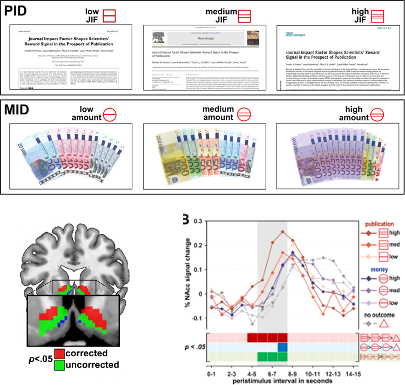Biases in journals: File drawer problem
Even beyond ‘prestige’ journals, journals are biased to publish positive (i.e. significant) findings
Because it is much easier to publish positive results, rather than nonsignificant results or failed replications, science has a ‘file drawer problem’
Scientists don’t try to publish their null results, and/or journals make it hard to publish them
This means the published literature is biased to contain significant results (that come from a distribution where there is no true effect)
Let’s work the probabilities
With an alpha level of p=.05, if we have 40 scientists testing any hypothesis we would expect one to find a significant result in one direction, and another to find a significant result in another direction just by random chance
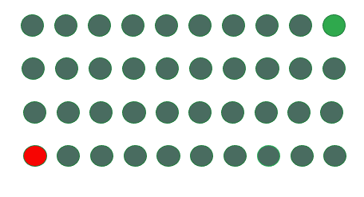The credibility revolution?
Recent years have seen several changes to how psychological science is conducted to overcome concerns about reliability – dubbed the ‘credibility revolution’
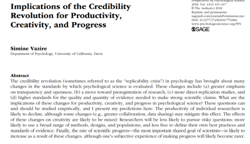Recommendations and changes
Low statistical power? Report power analyses and justify sample sizes
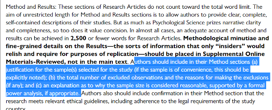(Taken from guidance to authors at journal Psychological Science)
Familiar?
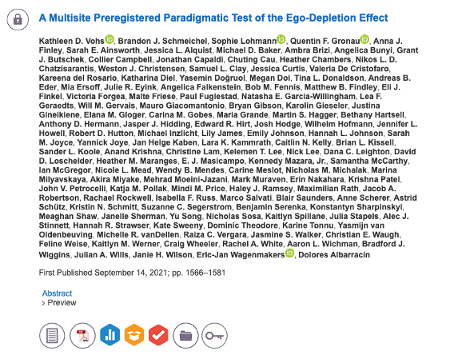The goal
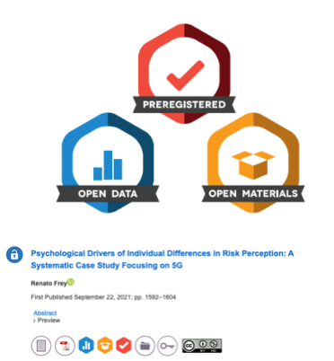The ‘normal’ process
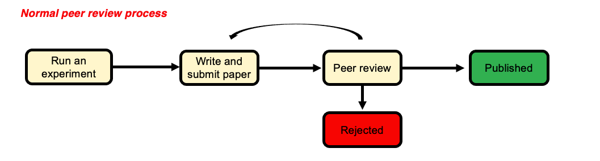A better solution?
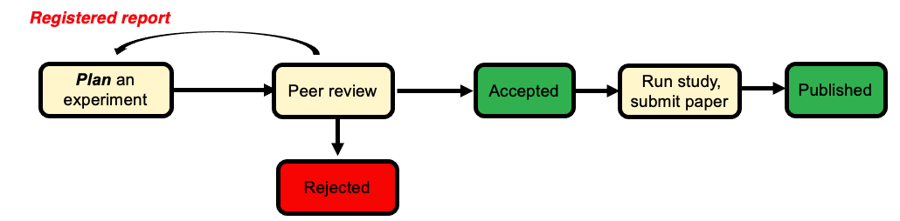Do scientists already ‘know’ which results to trust?
The unnerving thing about the ‘replication crisis’ seems to be that psychological theories are built on foundations of sand. But is this true?
Camerer and colleagues attempted to replicate 21 social science studies (including psychology) and found around 13 replicated.
However, the study also ran a prediction market where scientists (PhD or PhD student) had to bet on which studies would replicate and which wouldn’t
We should want our journal to publish things that are robust – but if scientists have a good sense of what is reliable, is this really a ‘crisis’?
Camerer et al. (2018)
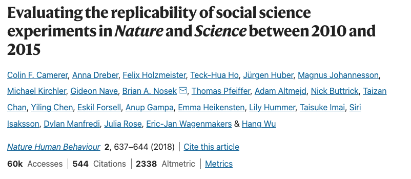Findings
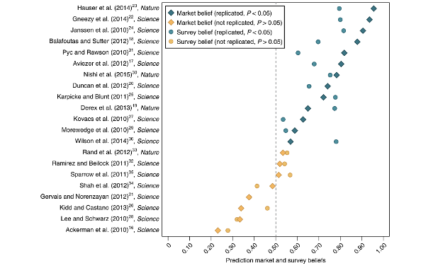Dubious efforts to replicate
Researchers who do replication studies also have flexibility in their design and analysis choices.
There may be a bias to not replicate certain findings (e.g., because you are sceptical of the result in the first place)

No reason to worry
Some have suggested that low replication rates are not necessarily a sign of bad research
Alexander Bird (philosopher of science) suggests worries about replication reflect base rate fallacy
Most hypotheses are wrong so we wouldn’t expect them to replicate in future studies
What do you think?
Alexander Bird (2018)
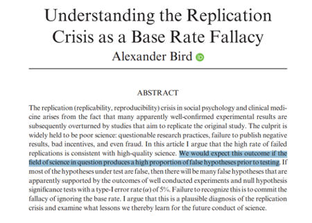Are we worry about the wrong thing?
Other psychologists have argued that focus on replicability, statistical robustness etc. is misguided
The real problem psychology has is the absence of strong theories
This “theory crisis” cannot be solved with more and more attention to statistics
Theory is the thing we should be caring about? Not specific effects in specific studies
No statistics can help us to test a theory that is poorly thought out
Summary
You should now know:
Why scientists are concerned about the reliability of psychological studies
Steps the scientific community are taking to overcome these worries
Not everyone is convinced that the ‘crisis’ is as serious as it seems, or whether these changes will help solve psychology’s problems
Questions?
Lab activities
Power Calculations for your Ethics Applications
Pay close attention to the lab slides.
Priority is the Critical Proposal